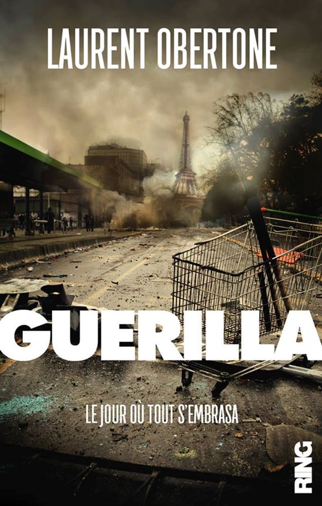
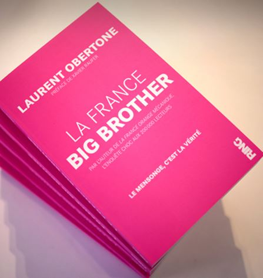
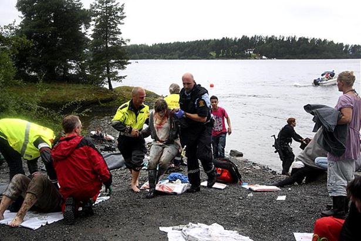

Laurent Obertone a publié quatre ouvrages aux éditions Ring. La critique parle peu de ses livres. En France aujourd’hui un auteur qui parle de nation, de patrie, de primauté nationale ou dénonce les injustices, est soit laissé à l’écart du monde des lettres, soit voué aux gémonies littéraires ; exception faite bien sûr de ceux qui ont déjà un nom et assurent de bons tirages à leurs éditeurs.
Si ça ne l’est déjà, ce sera certainement bientôt le cas de Laurent Obertone. Ce n’est donc pas grâce à la critique que Laurent Obertone doit son succès. Sa popularité est due à l’Internet, aux sites de « ré-information » que la presse correcte appelle désormais la Fachosphère. Puisque son dernier ouvrage a paru récemment, (octobre 2016) j’ai choisi de vous parler de son dernier livre et de ses deux précédents.
Guérilla
Son dernier ouvrage « Guérilla », porte en sous-titre « Le jour où tout s’embrasa ».
Bien qu’il ne figure pas en tête de gondole des rayons librairies ou des boutiques des gares et des aéroports, que des grands marchands en ligne ne l’aient pas inscrit dans leur catalogue de vente et que les pages littéraires des grands journaux l’ignorent superbement, le livre caracole en tête des meilleures ventes !
L’ouvrage est un roman sociologique qui se situe dans un futur proche. Il raconte comment la France est mise à feu et à sang en trois jours à la suite d’une bavure policière dans une cité, la cité « Taubira » à la Courneuve. Un des tours de force de l’auteur est de faire osciller sans cesse la narration de ces trois journées fatales entre la caricature et l’hyper réalisme. Réalisme, car on ne peut oublier qu’en 2005, à la suite de la mort de deux adolescents fuyant la police, les banlieues de toutes les villes de France s’enflammèrent pendant trois semaines.
« Guérilla » est une capture d’écran, un instantané de la France d’aujourd’hui.
Dans le roman, les chaines de télévision et d’information en continu disent toutes les mêmes choses inutiles et mensongères. Toutes s’abritent derrière les paroles rassurantes et moralistes des experts en dissensions périurbaines. Réalisme aussi quand, pour la presse et les médias, la légitime défense du flic n’existe pas, à priori. Il faut dire aussi que ce policier tue cinq jeunes gens désarmés, mais pour les journalistes les circonstances importent peu.
La prose d’Obertone gagne en finesse et en sobriété au fur et à mesure de ses ouvrages, ses phrases ne sont jamais longues, elles s’articulent presque toujours en quatre temps, comme un révolver dont on se sert pour un tir de précision : relevage du chien, ajustage des organes de visée, appui sur la détente et choc du percuteur :
« On bouscula le brigadier.
Ça y était.
S’il réagit il meurt. S’il ne réagit pas, il est mort. » p.14
L’écriture est plaisante et réfléchie tout au long de l’ouvrage, la psychologie des jeunes bourgeois pro-itinérants est finement perçue et décrite en termes choisis :
« Ils s’humiliaient par orgueil et se dénigraient pour mieux s’adorer. Être les premières des brebis, voilà leur ambition. Si le Dieu du Lien Social l’exigeait, ils n’hésiteraient pas à tomber sous les coups, à s’offrir à Lui, comme tant d’autres innocents. Cette divinité cruelle exigeait aussi des sacrifices intellectuels, quelques efforts pour réinterpréter les faits. » p.86
L’auteur nous régale souvent de mots qu’il invente, mais qui figureront bientôt dans la novlangue future que les conseillers en communication s’emploient chaque jour à inventer ou à améliorer. Ainsi les quartiers défavorisés deviennent des quartiers enrichis, les migrants deviennent des itinérants. Le roman s’appuie sur l’observation, sur un réel criant des banlieues. L’humour, ironique, s’il ne fait pas baisser la tension d’un cran, soulage le lecteur de l’angoisse qui commence à l’étreindre. Le cynisme sert ici d’antidépresseur au lecteur captivé. Caricature aussi, car le trait est parfois un peu forcé, tel que le Ministère du Très Bien Vivre Ensemble, Le Ministère du vivre ensemble aurait suffi. Certaines scènes semblent très improbables et sonnent faux, elles ne rajoutent d’ailleurs rien à la fiction et la desservent plutôt.
Comme dans tout bon roman les destins des personnages se croisent, parfois de façon tragique, parfois de façon inespérée. Comment mieux résumer l’insurrection, la folie et les massacres collectifs, car ces derniers abondent, qu’avec la formule suivante ?
« Pour les uns, la vie était une fête. Pour les autres une longue défaite. » p.104
Le livre pèche parfois par similitude, un des acteurs, résistant déterminé, tueur froid et lucide, renvoie étrangement à Anders Breivik dont Obertone a tracé le portrait dans UtØya.
L’ouvrage ressemble également, par sa structure, aux Camp des Saints de Jean Raspail, traitant du même sujet, il s’inscrit dans la même veine. Non pas par un copier-coller ou une analogie de style, mais par la psychologie du drame. Dans les deux ouvrages il y a deux camps principaux : les envahisseurs chez Raspail, les « révoltés » dans Guérilla et les officiels qui ne maîtrisent plus rien et essaient en vain de limiter la casse. Puis, plus minoritaires, en parallèle, les collabos au grand cœur qui ont le cerveau contaminé par la lâcheté et la propagande, ceux qui n’ont pas encore compris que la naïveté est une chose dangereuse. Dans l’autre camp se trouvent les résistants. Ces derniers, militaires rebelles ou en retraite sont peu nombreux dans les deux ouvrages.
Dans Le Camp des Saints, il s’agit d’un élément isolé mais lucide ; dans Guérilla de quelques parachutistes. Dans un ouvrage comme dans l’autre, ces derniers sont bien conscients qu’en tout état de cause il s’agit d’un dernier baroud d’honneur.
« Guérilla » semble plus réaliste que « Le Camp des saints ».
Pouvait-on en 1973 imaginer que des millions d’hommes viendraient un jour en bateau débarquer sur les côtes de la méditerranée ?
Fadaises que tout cela !
Peut-on à notre époque imaginer que la France soit à genoux en trois jours ?
Fadaises que tout cela !
Excellent ouvrage d’une écriture sobre et percutante au réalisme froid qui glace quand même un peu le lecteur lucide. Pour les autres, ceux qui n’ont pas encore compris que cette possibilité est à prendre en compte, aucune inquiétude, ils ne le liront pas. D’ailleurs l’ouvrage leur est dédié.
La France Big Brother
De Laurent Obertone, éditions Ring
Expéditeur : Monsieur moyen
Destinataire : Laurent Obertone, aux bons soins de Big Brother
Mon cher Laurent,
J’ai lu ton dernier ouvrage sous forme épistolaire, tu t’adresses à moi, lecteur, en me tutoyant. Je ferai donc de même. Tu parles au nom de Big Brother, nous sommes entre vieilles connaissances. Tu me nommes Monsieur Moyen, comme il y a des français moyens. Je suis effectivement un Monsieur Moyen : je suis prisonnier de mes achats, de mes fins de mois, de mes affects, du matraquage odieux qu’exercent les médias à mon égard, de la recherche de mon petit confort, de ma perte d’intérêt pour mes semblables, ma patrie, mon travail, mes amis, mes amours, mes emmerdes, comme dit le chanteur. Mais ce ne sont pas tes épîtres averties qui m’en ont fait prendre conscience. Non.
J’ai acheté ton livre, comme beaucoup de tes lecteurs, en le réservant bien avant sa parution chez Amazon, sans penser au libraire du coin, c’est le système. Je l’ai réservé, car tes deux premiers opus m’avaient plu. Je m’attendais à de la même veine : des chiffres et des démontages de fonctionnement comme tu l’avais fait avec « La France Orange mécanique ». Ce que tu fais dans tes saintes épîtres, tu as tenu parole, grâce t’en soit rendue.
Le mode que tu as pris pour t’adresser à moi me fait curieusement penser à un autre livre rédigé sous forme de courrier non oblitéré : « Écoute, petit homme » de W. Reich, un freudo-marxiste de l’ère stalinienne qui termina dans les poubelles de l’histoire. J’étais un petit homme avant d’être un Monsieur Moyen. Tu te glisses dans la peau de Big Brother, celui du roman de Georges Orwell, et tu te présentes en t’adressant à moi :
« Rien de ce que tu fais ne t’appartiens. Et tu n’appartiens qu’à Moi. Je conditionne tout. Je contrôle tout. Je t’ai tout appris. C’est moi qui t’ai dressé. Je suis ton maître. Je suis Big Brother » (p. 20) Vous êtes tous des dégénérés. » p.29
Tout au long de ta correspondance tu dénonces les tartuffes qui nous dirigent en faisant ressortir que ces tartuffes sont aussi des salauds. Je puise là mes deux minutes de haine quotidienne autorisées. Tu uses de formules remarquables et de vérités criantes pour me définir :
« Toi, le sommet de la chaine alimentaire, tu peux te permettre de ne pas savoir chasser. Ton ignorance fait de toi un être d’une docilité respectable. » p.25.
Tu continues en m’annonçant (p.332) que j’ai un taux de testostérone inférieur de 20 % à celui de mon père à mon âge. Comme tu le dis (p. 337) : « De là à créer une société de fiottes, il n’y a qu’un pas. »
Tu dénonces des émissions télé, des journalistes, des ministres, des présidents, c’est la vocation du livre. Il synthétise beaucoup d’informations qui circulent encore librement par mail, dans une ultime résistance à la novlangue et à la langue de bois du Parti. Dans « 1984 », il n’y avait pas encore l’Internet mais déjà les écrans et le double langage que notre presse illustre à merveille et que tu as bien saisi :
« Le syrien Al-Assad est élu en pleine guerre civile, c’est une élection sans valeur [...] L’Ukrainien Porochenko est élu en pleine guerre civile, c’est réglementaire [...]La sécession de la Crimée, c’est une parodie de plébiscite [...] au Kosovo le peuple s’est déterminé de manière libre et légitime [...] Quand la dictature est bonne c’est une transition démocratique (Egypte), quand elle ne l’est pas, c’est une junte au pouvoir (Birmanie) » (p.128)
Quelquefois pourtant, toi le redresseur de torts, tu pèches par omission ou par pensée peut-être... par calcul ? C’est ainsi que ciblant la presse écrite et ses aides de l’état, ses contributions directes et indirectes, en nous donnant des chiffres tu oublies certains journaux :
40 000 exemplaires du Monde achetés par Air France, 74 000 ex. achetés par le lecteur en kiosque.
20 000 exemplaires de Libé achetés par Air France, 36 000 ex. achetés en kiosque.
Tu ne donnes pas les chiffres du Figaro pour Air France. Tu ne les peut-être pas trouvés ? C’est 30 000 par jour achetés par Air France. Les salaires des journalistes sont comme ceux des députés et des sénateurs : faramineux. Des 40 000 euros mensuels en moyenne pour les têtes connues. Nos formateurs de cerveaux sont tous millionnaires. Les ouvriers du livre, monopole d’embauche de la CGT, ne touchant eux, en moyenne, que 5000 euros mensuels. (p.115)
Te trompes-tu encore sur le féminisme ? Dans le « chapitre » épistolaire qui lui est consacré et auquel, je dois le dire, je n’ai pas compris grand-chose, tu écris page 157, que la femme « « ne gagne plus à se marier et perd à divorcer. » Je te conseille de t’intéresser un peu à ce qu’on appelle les montants compensatoires et les pensions alimentaires. Dans une bourgeoisie cynique des femmes axent leur vie là-dessus en choisissant le « bon » mari.
Page 125, tu fais savoir que nos boss sont pour la plupart membres du Club Le Siècle ou Francs-maçons. Mais tu écris à la fin de ton ouvrage, page 355, qu’il n’y a pas de complot, pas d’illuminati juste des illuminés. Tu oublies Davos, la Trilatérale, les banques centrales, le FMI. Tu oublies que les sujets de société se discutent d’abord et sont décidés dans des lieux très fermés. Mais tu dois avoir raison, moi non plus je ne crois pas au complot, quoique... Je sais que la bêtise est grande et la pulsion d’autodestruction de l’homme occidental puissante.
Tu n’aimes pas Hollande et tu l’accuses d’avoir tué la fonction présidentielle (p.276) mais je ne suis pas vraiment sûr que ce soit lui qui ait commencé. Ce n’est pas le premier président-pitre que nous ayons. On a juste changé Monsieur Loyal contre l’Auguste.
Les chiffres donnent le vertige, heureusement qu’on les oublie assez vite. Comme tu l’écris, toute ma vie je me souviendrai des mots de la chanson de Carlos « tout nu et tout bronzé » et j’oublierai rapidement ce que tu me dis. Six milliards d’euros de retraites qui partent toutes les années à l’étranger (p.259) tu aurais pu rajouter que c’est souvent pour payer des morts. Tout le monde ne le sait pas.
Si je n’avais lu ton livre que pour y apprendre une seule chose, ce serait pour savoir enfin combien coûte La Cour des Comptes qui dénonce les gaspillages à longueur de rapports onéreux : 214 millions d’euros par an ! Je ne l’avais jamais trouvé sur le net ! C’est comme pour les chiffres du Figaro, des fois on cherche mal…
S’il faut conclure, car chaque lettre a sa conclusion, je trouve tes propos assez nihilistes, car nous savons bien que c’est sans espoir et sans solution, question de démographie... de volonté de Big Brother et peut-être de l’impermanence des choses. Les civilisations sont mortelles. Ton ouvrage est une association du droitisme identitaire et du fameux roman de Georges Orwell sur lequel tu te calques. D’ailleurs ton ouvrage porte en sous-titre un slogan du roman : « Le mensonge c’est la vérité » nous n’avons jamais été aussi proches de l’univers orwellien : nous y sommes ! Mais peut-être y sommes-nous depuis longtemps.
C’est pourquoi je me demande pour quelle raison, à la fin de l’ouvrage, tu me sommes de choisir mon camp, comme s’il était encore possible de choisir !
J’ai apprécié tout de même le moment passé à lire tes lettres et je les recommande. Elles sont un condensé de ce que les insoumis reçoivent dans leurs mails et qu’ils peuvent lire sur les mauvais sites qu’ils visitent régulièrement. Ceux que Big Brother n’a pas encore tout à fait réussi à éliminer. Toutefois, si ton prochain opus est rédigé sous forme épistolaire, ne te trompe pas de destinataire : ne me prends pas pour un autre ! On peut ne pas avoir fait l’Ecole de Journalisme de Lille et être assez bien informé. Tes lecteurs le sont et tu le sais !
Mais quand on sait que tu es né en 1984, on comprend mieux ta démarche. Fais gaffe quand même, avec les années le taux de testostérone diminue irréversiblement, ce qui fait qu’on a un peu moins envie de... se battre et puis, on finit par en avoir tellement vu qu’on relativise ou alors, on s’en fout !
En tous les cas Cher Laurent, merci pour ce moment.
Monsieur Moyen. 03/02/2014
UtØya
L’ ouvrage de Laurent Obertone, UtØya, éditions Ring, est un récit. En sous titre figurent les mots suivants : « Norvège, 22 juillet 2011, 77 morts. »
L’auteur rentre dans la peau d’Anders Breivik et parle à la première personne. UtØya est le nom de l’île norvégienne ou le drame s’est déroulé.
L’ouvrage remplit plus de 400 pages en 12 chapitres et se divise en trois parties.
Dans la première l’auteur raconte le massacre sur l’île qui a duré à peine un peu plus d’une heure. C’est du polar avec action. Un tueur tue et il ne doit pas être très difficile de rentrer dans la peau de Breivik. Tous les auteurs de polars ne sont pas des assassins et beaucoup arrivent à vous donner l’impression de rentrer dans la peau des tueurs. C’est ici le cas.
La deuxième partie est plus problématique Obertone/Breivik essaie d’expliquer les théories extrémistes du meurtrier au lecteur. Ce n’est pas non plus trop difficile : aujourd’hui est classé à l’extrême droite, fasciste ou nazie, tout ce qui ne ressort pas du consensualisme mou niant le réel.
Les races n’existent pas, la compétition est condamnable, toutes les religions se valent, l’autre ne peut être qu’un enrichissement, il n’y a pas de différence entre les femmes et les hommes…
Le tableau est le même que celui de la France : l’idéologie des bisounours qui ont perdu tous repères en niant le sens commun.
Breivik déteste le Parti Travailliste Norvégien qu’il qualifie de marxiste tout le long de l’ouvrage et il lui attribue tous les malheurs actuels de la Norvège : immigration, dévirilisation des vikings etc.
Cette partie deux finit par lasser, elle dure trop, tourne en rond, la même antienne revient à des tempi différents dans des tessitures diverses.
La troisième partie raconte la préparation des attentats, celui d’Oslo et d’ UtØya. Là ce n’est pas décevant. Breivik ne voulait pas être reconnu fou, il voulait utiliser son procès comme un lieu de paroles afin de diffuser son message. Il est vrai que jusqu’à cette partie on pouvait se poser la question de son génie. En fait le meurtrier n’est qu’un adolescent attardé, addicté aux jeux de guerre vidéo sur son ordinateur, incapable de réussir quoi que ce soit, imprévoyant au possible.
Tout a été fait par Internet, de son bourrage de crâne Templier commandeur au mode de fabrication et d’achat des explosifs. Lors de cette étape de fabrication dans une ferme isolée, il laissa griller son ordinateur... par un orage !
Le deuxième orage ne lui grilla que le modem ! Et il en fut ainsi de toute sa préparation. À l’embarcadère d’ UtØya il aurait dû être arrêté, sa tenue était une tenue de terroriste de carnaval. Il a pu abuser les flics parce que les méchants n’existent pas, les norvégiens le croyaient avant UtØya. Ont-ils changé d’avis ?
Partager cette page